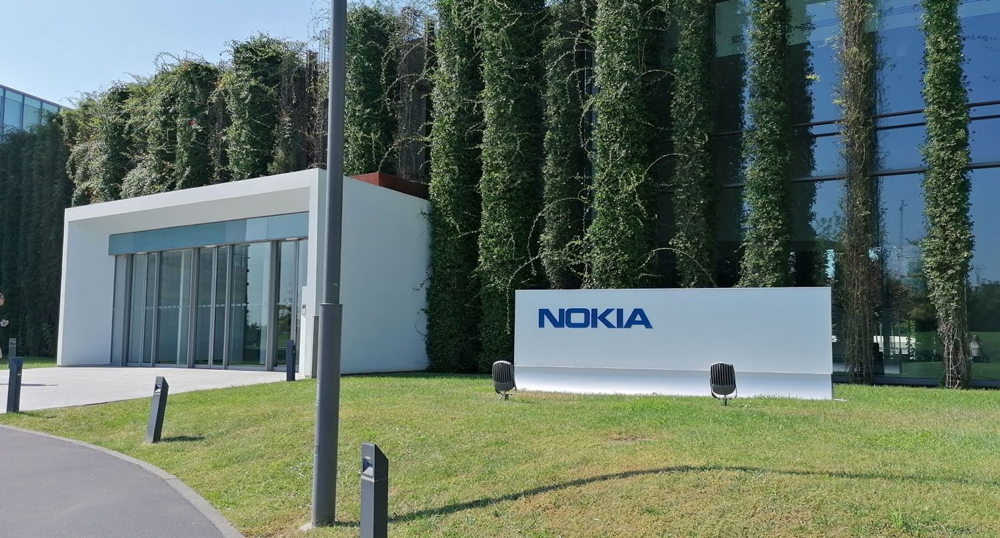

Nokia è un'azienda multinazionale finlandese che ha avuto un ruolo fondamentale nello sviluppo delle comunicazioni mobili. È stata leader mondiale nella produzione di telefoni cellulari alla fine degli anni '90 e nei primi anni 2000, nota per i suoi dispositivi resistenti e facili da usare. Oggi, Nokia si concentra sulle infrastrutture per le telecomunicazioni, la tecnologia 5G e l'innovazione digitale, mantenendo una forte presenza nel settore delle soluzioni di rete a livello globale.